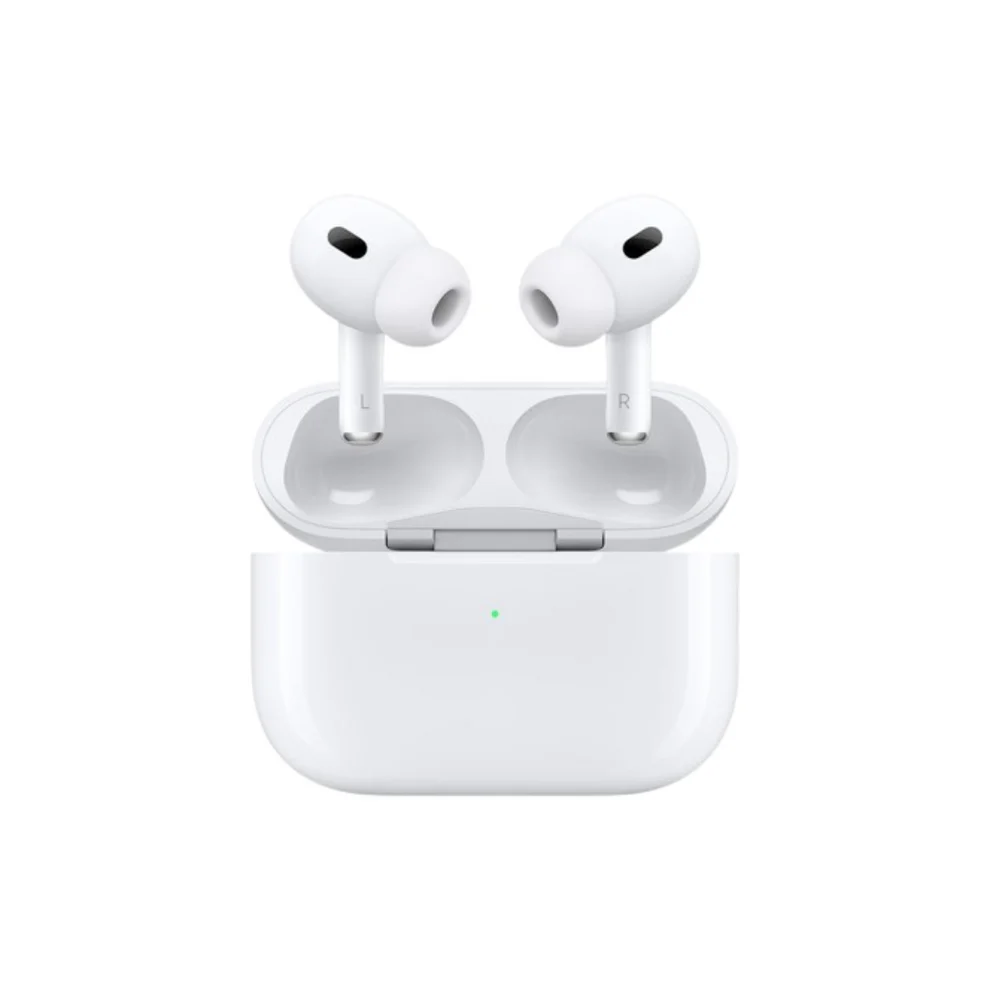

← Volver al catálogo
AirPods Pro 2ª Generación – Cancelación de ruido y sonido superior

Los AirPods Pro 2ª generación combinan una calidad de sonido impecable con tecnología avanzada de cancelación activa de ruido y un diseño compacto y cómodo. Ideales para quienes buscan concentración y una experiencia auditiva premium en cualquier entorno.
Características principales:
- Cancelación activa de ruido mejorada para eliminar ruidos no deseados.
- Modo transparencia para escuchar el entorno sin quitarte los auriculares.
- Audio espacial con seguimiento dinámico para sonido envolvente.
- Resistencia al sudor y al agua.
- Hasta 6 horas de reproducción continua y más de 30 horas con el estuche de carga.
- Estuche de carga MagSafe para mayor comodidad.
- Emparejamiento rápido y conexión estable con dispositivos Apple.
Disfruta de un sonido claro y un aislamiento perfecto en cada momento.